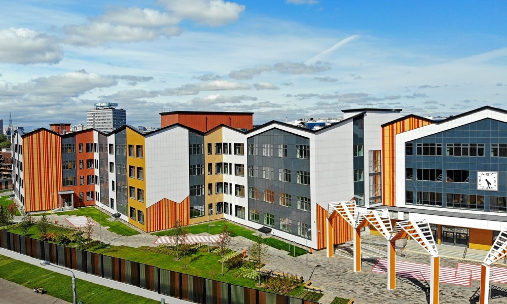

Капустин Денис Юрьевич
Руководитель корпуса
Москва, проспект Лихачёва, д. 11

Корпус открыт в январе 2020 года. В здании площадью 41 000 м² размещены учебные, культурные и спортивные пространства, Кванториум, пять спортивных залов и актовый зал на 1000 мест.
Почтовый индекс: 115280.
Руководитель корпуса
Приём посетителей: Четверг, 16:00–18:00. По предварительной записи.
+7 (495) 198-02-57, доб. 201Адрес: Москва, проспект Лихачёва, д. 11. Точную точку и маршрут откройте в Яндекс Картах.
Открыть Яндекс Карты